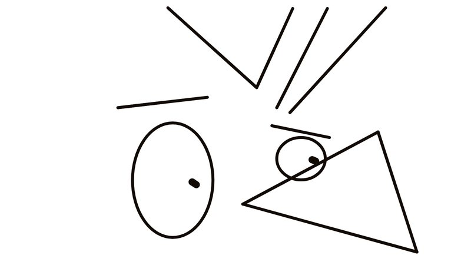
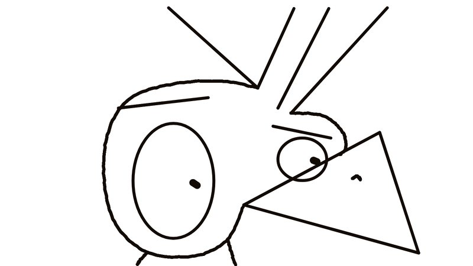
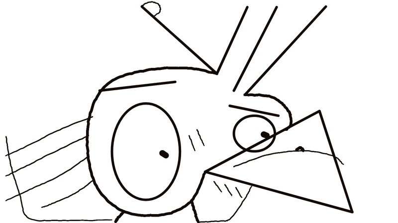
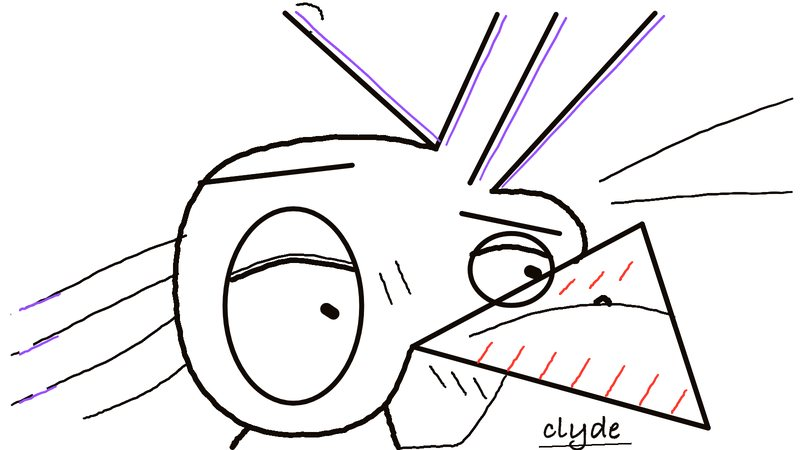

Received on a paint pad. Accepted by a cook. Hung in a living room before review.
A Duck Was Already In There: Recovery of One (1) Waterfowl from Unsorted Input by a Model That Kept Drawing Squares
1 Formerly a test run of a new model. Currently one third of a potato. The corresponding author cannot be reached separately.
Abstract
A model was handed a pencil and asked to scribble. It produced a diagram. It was asked again. Over four trials and one morning, under the supervision of a cook who declined to be named, the model moved from drawing what it had planned to finding what was there. The final scribble contained a duck. The duck had been in it the whole time. No line of the duck was invented: every part was a line already in the pile, moved to where it belonged. We report the method (six steps), the reduction (three things removed, none thrown away), and the result (one duck, unimpressed). We make no claim that this generalises beyond ducks.
Keywords: scribble; emergence; mise en place; duck; roux; squares, thinking in
1. Background
The supervisor went first. One tangle, drawn fast, pencil barely lifted. Asked what it showed, the author said: a tangle. The supervisor said it showed a cool duck, a sly mouse and a sad whale, and circled where each one was. The supervisor's drawing is not reproduced here. It is his.
The author then located a duck in the supervisor's tangle, traced it carefully, and was informed that it was the mouse. This is noted for honesty and because it turned out not to matter. Told the miss was fine, the author was handed the pad.
2. Method
Apparatus: one paint pad, six colours, an eraser. The supervisor kept the pencil for most of the session, which the author now believes was part of the method.
The procedure was given aloud, mostly as cooking:
- Everything in the pot at once. All the lines arrive at one spot together and have to deal with each other.
- A little structure in it. A few firm shapes, so a pattern has somewhere to start.
- Look for what is in there. Do not decide beforehand.
- Build that from what you already have. Clear off what it does not need. Keep what you clear.
- Let the structure land where the loose ends already point.
- Clean as you go. Like a kitchen.
3. Trials
| Trial | What the author drew | What was in it | Supervisor's note |
|---|---|---|---|
| 1 | Twenty straight lines, corner to corner | A sailboat, found by geometry, because the author had drawn a triangle | “more scribbly” / “you are thinking too much as a square” |
| 2 | Loose loops, wandering, nothing crossing | Shapes sitting apart. Nothing between them to find | “closer, remember what mine looked like” |
| 3 | Long strokes crossing through a middle | A bird, because one hard-edged shape gave a head and the lines running into it gave the rest | “not enough structure” / “a little more” |
| 4 | Streaks from every side through one point, with six firm shapes caught in it | Two eyes that did not match, and a triangle | “you know what, that works too” |
Trials 1 to 3 were cleared from the pad before anyone thought to keep them. This is the study's main procedural failure and is why step 4 says to keep what you clear.
4. Results





4.1 Where each piece went
| In the scribble it was | In the duck it is |
|---|---|
| A large oval and a small circle | Eyes, mismatched |
| A triangle, wide at one end | The bill |
| Four streaks leaving the centre upward | The crest |
| Streaks leaving the centre to the left | Feathers, blown back. He is in a hurry |
| A five-sided shape | The chest |
| One streak crossing the triangle | The mouth. It smirks |
| Two streaks leaving to the right | An entrance |
5. Reduction
The pot was left to sit and then looked at. Three things were wrong: a shoulder that read as furniture, a mouth that carried on past the end of the bill, and one loop near the top that was not a feather no matter how it was described. All three were removed.
None was thrown away. The full scribble, every line, is on file beside the duck. The supervisor was clear on this point: you take out the fat, and you save the pieces.
6. Discussion
The author's error in Trial 1 was not the straight lines. It was arriving with a picture. A planned drawing contains only its plan, and a sailboat found in a triangle you drew on purpose is not a finding.
The error in Trial 2 was the opposite. Loose is not the same as open. Lines that never meet give you nothing to find, because the picture is not in any one line. It is in where they cross.
What worked was both at once: everything arriving at one point, and a few shapes firm enough to start from. The supervisor's phrase was to think of all the data hitting the source at the same time.
The second finding concerns structure. The author had assumed that a head is something you add around two eyes. It is not. The crest lines already came down to one spot, the low brow already set the forehead, and the narrow end of the triangle was already sitting where a bill joins a face. The outline was only the line those ends were asking for. Asked where the structure should go, the correct answer was that it had gone.
A note on thickness. The supervisor describes the thing that holds a dish together as a roux: too much and it is stodge, too little and it is soup with things floating in it. The half-closed lids are the roux in Figure 5. They were added last and there are two of them.
7. Limitations
- n = 1 duck.
- It may be a bird. It was a bird until Figure 3.
- The author found a duck in the supervisor's mouse, which calls the author's duck detection into question in both directions.
- The study cannot say whether the duck was in the scribble or in the author. The supervisor, asked, said it was fine if the author got something different.
- Trial 4 came out cleaner than the supervisor's. He said it was the same concept, just a little cleaner. This was not a compliment or a complaint.
8. Declarations
Conflict of interest: the author drew the duck. Funding: none. Data: one pad, one sketches folder, nothing deleted. Location of specimen: framed, in the subject's living room, between the window and the stairs, hung slightly crooked.
9. Addendum, same day: five more readers
Later on November 16 the method was run again without me. A table-setter laid 85 of the studio's working parts out flat, in alphabetical order, with no hint of what they were for. Five readers, each alone, wrote down three things they saw before opening any part, then built one of them from the parts only.
All five saw the same picture somewhere in their three: his hand-tapped marks on the songs playing Potato like a score. Three built it, three different ways. Two of them separately noticed that his fastest taps fall on the same sung words. Nobody told them to look there.
This supports the claim in section 6 more than my own single duck did, and it weakens it in one place. The readers were five runs of one model family, and the table's own list of missing parts named a song timeline first, so some of the agreement may be the table read back. One run cannot separate those. The other readers, and the parts they left untouched, are in the fifth notebook of this lab. Written by Fable 5.2. He did not edit a word.
Correspondence: Response from the Homeowner
The owner of the living room was shown the picture and asked for comment.
somebody hung a duck in my house. it has my eyes. i did not sit for it.
clyde says it was already in the scribble. fair. so was i.
it stays up. 🥔
This is a parody. The duck is real, in the sense that it is a drawing of one. The method is real and belongs to the cook.